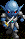
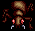
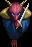
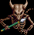
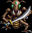
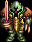
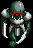

出現場所：草原
出現場所：草原
出現場所：草原


出現場所：草原
出現場所：サルモン神殿付近
出現場所：サルモン神殿 地下1,2 階

出現場所：サルモン神殿 地下3 階
目次 > ゲームについて > 日本Falcom 攻略 > Ys > 敵キャラ一覧
らんの眼
Ys(イース) Ys Eternal(VE)/Ys Complete
| 概要 | 情報 | ボス戦 |
| 敵キャラ一覧 | アイテム一覧 | 攻略チャート |
| 地図 | ダウンロード | イースの本 |
| 経験値表 | 地名一覧 | タイムアタック |
| ETERNAL / Complete 比較 | キャラクター一覧 | |
| Ys 攻略へ | 目次へ戻る |
| 名前 | 画像 | HP | 攻撃力 | 防御力 | 所持金 | 経験値 | 備考 |
| OACROT | 25 | 16 | 9 | 6 | 2 | 樫の木に魔力が宿り、凶暴化したらしい。 出現場所：草原 |
|
| CURLOYD |  | 25 | 19 | 11 | 10 | E：2/C：4 | 一説にはエステリアの先住民がよみがえり、人を襲っているのだという。 出現場所：草原 |
| RHEBOLL | 30 | 23 | 12 | 14 | E：2/C：6 | 赤狼が魔獣の肉を食べたために凶暴化したもの。 出現場所：草原 |
|
| PICARD | |
8 | 13 | 8 | 1 | 1 | ゲーム中、最弱のモンスター。実は食べるとおいしいために、この地域では飼育している。 出現場所：草原 |
| UNUGUN | 50 | 34 | 10 | 14 | E：4/C：8 | サルモンの神殿を守っていた傭兵の死体が、魔の力を受けてよみがえったもの。 出現場所：サルモン神殿付近 |
|
| 名前 | 画像 | HP | 攻撃力 | 防御力 | 所持金 | 経験値 | 備考 |
| UHNOS | 50 | 93 | 60 | 50 | 40 | 出現場所：サルモン神殿 地下1 階 | |
| BOLNER |  | 50 | 97 | 70 | 60 | 50 | 魔の力で昆虫が凶暴化したものだという。クモではないらしい。 出現場所：サルモン神殿 地下1,2 階 |
| LOOTER | 50 | 110 | 100 | 70 | 60 | 出現場所：サルモン神殿 地下1,2 階 | |
| RESCOYD | 100 | 140 | 105 | 100 | 70 | 出現場所：サルモン神殿 地下3 階 | |
| LYUS | |
100 | 155 | 120 | 120 | 80 | かつてアフロカから謙譲された百獣の王の死体がよみがえったもの。素早く、攻撃力が高い。 出現場所：サルモン神殿 地下3 階 |
| DINVEL |  | 100 | 167 | 132 | 140 | 90 | 出現場所：サルモン神殿 地下3 階 |
| 名前 | 画像 | HP | 攻撃力 | 防御力 | 所持金 | 経験値 | 備考 |
| 名前 | 画像 | HP | 攻撃力 | 防御力 | 所持金 | 経験値 | 備考 |
| NUBRROW | 180 | 185 | 110 | 200 | 200 | 出現場所：廃坑 第一層 | |
| GRYEL | 180 | 200 | 120 | 240 | 240 | 発光苔を光らせる成分と、洞窟に住み着く微生物が融合して生まれた魔獣。その体は何度切り裂いてもすぐに再生するという。 出現場所：廃坑 第一層 |
|
| OTHCLOS | 180 | 220 | 130 | 240 | 240 | 見た目以上に強い。 出現場所：廃坑 第一層 |
|
| DYNICK | 200 | 200 | 120 | 200 | 320 | 発生のルーツは不明。とにかく、その巨大な口で大人でも一飲みにするという。 出現場所：廃坑 第二層 |
|
| KARON |  | 200 | 225 | 150 | 240 | 360 | 出現場所：廃坑 第二層 |
| MENON | 200 | 235 | 160 | 280 | 400 | 素早く、硬く、そして攻撃力も高い要注意のモンスター。 出現場所：廃坑 第二層 |
|
| CHELASKEN | 255 | 210 | 160 | 200 | 440 | 出現場所：廃坑 第三層 | |
| LIMENDY |  | 255 | 225 | 175 | 240 | 480 | 出現場所：廃坑 第三層 |
| BRAYZAL | 255 | 235 | 185 | 280 | 510 | イース末期に女神の間を守る戦士達が、魔の力で蘇った模様。真鍮の装備で全身を多い、猛烈な剣技で侵入者に襲い掛かる。 出現場所：廃坑 第三層 |
|
| 名前 | 画像 | HP | 攻撃力 | 防御力 | 所持金 | 経験値 | 備考 |
| REFRYGUN | 255 | 236 | 100 | 280 | 510 | 出現場所：ダームの塔 1,2 階 | |
| JESTONA | 255 | 236 | 120 | 280 | 510 | ルタ＝ジェンマに己の姿を”愛らしい”と言わしめた。 出現場所：ダームの塔 3,4 階 |
|
| ACUMATE | 255 | 250 | 120 | 280 | 510 | もしかしたら、EVEL EYE という超強力な攻撃をしてくるかもしれない。 出現場所：ダームの塔 6 階 |
|
| ZINOYD | 255 | 250 | 120 | 280 | 510 | 出現場所：ダームの塔 7,9 階 | |
| NORMASS | 255 | 250 | 170 | 280 | 510 | ダームの塔で時々見かける石像。しかし、これはあくまでもモンスター。高速で動き回り、アドルを翻弄したいようだが、めちゃくちゃに動いているようにしか見えない。 出現場所：ダームの塔 9 階 |
|
| XOMACK | 255 | 244 | 120 | 280 | 510 | かつての上級兵士だという。鎧をまとい、襲ってくるがたいした脅威ではない。 出現場所：ダームの塔 10 階 |
|
| WILEWARER | 255 | 248 | 146 | 280 | 510 | 出現場所：ダームの塔 13 階 | |
| VILVAN | 255 | 244 | 120 | 280 | 510 | 数々の諸説の中、毒キノコが魔の力で動き始めたというのがもっとも有力。麻痺効果のある毒を使い、獲物を狙うという。 出現場所：ダームの塔 13 階 |
|
| 名前 | 画像 | HP | 攻撃力 | 防御力 | 所持金 | 経験値 | 備考 |
| 名前 | 画像 | HP | 攻撃力 | 防御力 | 所持金 | 経験値 | 備考 |
| IREBOWG |  | 255 | 256 | 144 | 280 | 510 | 出現場所：ダームの塔 15,16 階 |
| MOLFES | 255 | 256 | 190 | 280 | 510 | 出現場所：ラドの塔 1 階 | |
| KELMAREL | 255 | 260 | 200 | 280 | 510 | 狭い通路での正面衝突は避けたいところ。 出現場所：ダームの塔 17 階 |
|
| SELNURGE | 255 | 256 | 140 | 280 | 510 | 出現場所：ダームの塔 18 階 | |
| CHRYOLOS |  | 255 | 256 | 140 | 280 | 510 | 昆虫や爬虫類が魔の力で融合したという説が有力なモンスター。肩から巨大な爪が伸びており、薄い鉄板は簡単に貫くという。しかし、それほど強いとは思えない。 出現場所：ダームの塔 19 階 |
| TOWARS | 255 | 290 | 234 | 280 | 510 | このゲーム中最強のモンスター。尋常ではない攻撃力と防御力、そしてアドルよりも移動力が高いという真の強敵。一対一でやっと勝てるといったところ。 出現場所：ダームの塔 20 階 |
|
| EUCHREAS | 255 | 270 | 160 | 280 | 510 | 戦略家のためか、部屋から出ず、突撃してきた侵入者を待ち構えている。 出現場所：ダームの塔 21 階 |
|
| BORDISH | 255 | 274 | 170 | 280 | 510 | ETERNAL とComplete でグラフィックが大きく変化。 出現場所：ダームの塔 21 階 |
|
| 名前 | 画像 | HP | 攻撃力 | 防御力 | 所持金 | 経験値 | 備考 |
| 名前 | 画像 | HP | 経験値 | 備考 |
| ジェノクレス |  |
100 | 500 | サルモン神殿のボス |
| ニグティルガー | 210(?) | 5000 | サルモン神殿 地下3 階のボス | |
| ヴァジュリオン |  |
255 | 5000 | 廃坑のボス |
| ピクティモス |  |
255 | 5000 | ダームの塔8 階のボス |
| コンスクラード |  |
255 | 5000 | ダームの塔13 階のボス |
| ヨグレクス&オムルガン |  |
255 | 5000 | ダームの塔21 階のボス |
| ダルク＝ファクト |  |
255 | 0 | |
| 名前 | 画像 | HP | 経験値 | 備考 |
| 概要 | 情報 | ボス戦 |
| 敵キャラ一覧 | アイテム一覧 | 攻略チャート |
| 地図 | ダウンロード | イースの本 |
| 経験値表 | 地名一覧 | タイムアタック |
| ETERNAL / Complete 比較 | キャラクター一覧 | |
| ページ上部へ | Ys 攻略へ | 目次へ戻る |